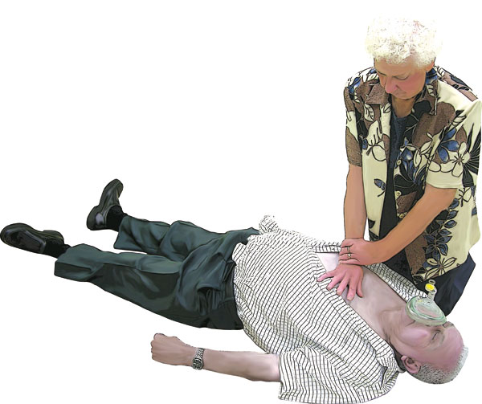
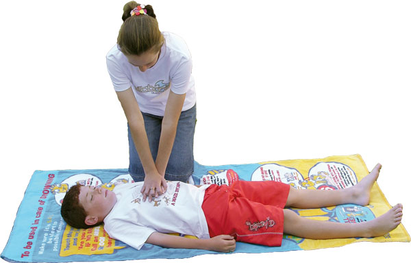
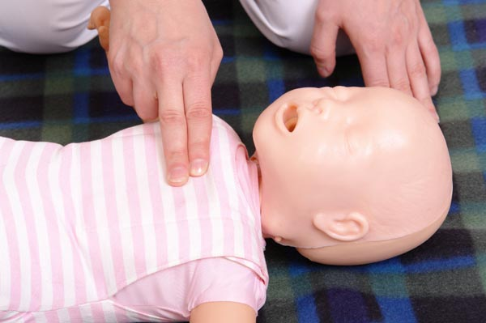

Chest Compressions
Chest Compressions
Cardiopulmonary Resuscitation (CPR) is Rescue Breathing used in conjunction with Chest Compressions. CPR is the most effective form of active resuscitation available today and is used universally by first aiders and medical personnel alike. The technique is vital in supplying oxygen and blood circulation to the casualty and is used to 'buy time' in resuscitation of casualties in cardiac arrest.
Rescue breaths provide oxygen to the casualty's lungs and blood while chest compressions, when applied correctly pumps the oxygenated blood around the body. Effective CPR will "buy time" for a casualty by circulating blood and oxygen around the body reducing damage to vital organs such as the brain.
Indications for CPR
 Unconscious (unresponsive)
Unconscious (unresponsive)
 Not moving
Not moving
 No normal breathing, although there may be brief irregular, 'gasping' breaths
No normal breathing, although there may be brief irregular, 'gasping' breaths
Procedure for CPR
To provide effective compressions the first aider must compress in the centre of the casualty's chest.
 ensure the safety of all those at the scene
ensure the safety of all those at the scene
 check the casualty's response
check the casualty's response
 check the casualty's condition and send or go for help, or call Triple Zero (000) for an ambulance
check the casualty's condition and send or go for help, or call Triple Zero (000) for an ambulance
 if you are on your own, leave the casualty and go for help
if you are on your own, leave the casualty and go for help
 open airway
open airway
 check breathing
check breathing
 if unresponsive and not breathing
if unresponsive and not breathing
Adults and Children
 kneel by the side of the casualty
kneel by the side of the casualty
 place the heel of one hand in the centre of the casualty's chest
place the heel of one hand in the centre of the casualty's chest
 place the heel of the other hand on top of the first hand and interlock the fingers of the hands
place the heel of the other hand on top of the first hand and interlock the fingers of the hands
 DO NOT apply any pressure over the casualty's ribs, upper abdomen or the bottom end of the bony sternum (breastbone)
DO NOT apply any pressure over the casualty's ribs, upper abdomen or the bottom end of the bony sternum (breastbone)
 position yourself directly above the casualty's chest and, with your arms straight, press down on the sternum 1/3 depth of chest
position yourself directly above the casualty's chest and, with your arms straight, press down on the sternum 1/3 depth of chest
 release all the pressure on the chest without losing contact between the hands and the sternum
release all the pressure on the chest without losing contact between the hands and the sternum
 give 30 compressions at a rate of about 100 times a minute (a little less than 2 compressions a second)
give 30 compressions at a rate of about 100 times a minute (a little less than 2 compressions a second)
 compression and release should take an equal amount of time
compression and release should take an equal amount of time
Infants
 kneel by the side of the casualty
kneel by the side of the casualty
 place two fingers in the centre of the casualty's chest
place two fingers in the centre of the casualty's chest
 ensure that pressure is not applied over the casualty's ribs.
ensure that pressure is not applied over the casualty's ribs.
 DO NOT apply any pressure over the upper abdomen or the bottom end of the bony sternum (breastbone)
DO NOT apply any pressure over the upper abdomen or the bottom end of the bony sternum (breastbone)
 position yourself directly above the casualty's chest and, with your arm straight, press down on the sternum 1/3 the depth of the chest 30 times
position yourself directly above the casualty's chest and, with your arm straight, press down on the sternum 1/3 the depth of the chest 30 times
 release all the pressure on the chest without losing contact between the fingers and the sternum
release all the pressure on the chest without losing contact between the fingers and the sternum
 give 30 compressions at a rate of about 100 times a minute (a little less than 2 compressions a second)
give 30 compressions at a rate of about 100 times a minute (a little less than 2 compressions a second)
 compression and release should take an equal amount of time
compression and release should take an equal amount of time
Chest compression only CPR
If for any reason rescue breaths can not be given, chest compressions should still be administered as some oxygen will still be circulated. Compress in the centre of the casualty's chest continuously 100 times per minute.
Re-checking for circulation
You should only stop to re-check the casualty if they start breathing normally again, otherwise do not interrupt resuscitation.
Multiple rescuers
If there is more than one rescuer present, change over the role of performing CPR approximately every 2 minutes to reduce fatigue. Change over with minimal delay of compressions.
When to stop CPR
 Qualified help arrives and takes over
Qualified help arrives and takes over
 The casualty starts breathing normally
The casualty starts breathing normally
 You become physically unable to continue
You become physically unable to continue
When to get help
 If more than one rescuer is available, one should start resuscitation while another rescuer goes for assistance
If more than one rescuer is available, one should start resuscitation while another rescuer goes for assistance
 In children or infants if only one rescuer is available, then perform 1 minute of CPR before leaving to go for assistance
In children or infants if only one rescuer is available, then perform 1 minute of CPR before leaving to go for assistance
 If the casualty is an infant or small child it may be possible to take them with you
If the casualty is an infant or small child it may be possible to take them with you
 If the collapse was sudden, not caused by trauma or poisoning and the casualty is a child with a history of heart disease, go for help immediately
If the collapse was sudden, not caused by trauma or poisoning and the casualty is a child with a history of heart disease, go for help immediately